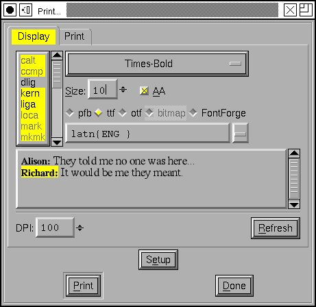

 このダイアログでは、FontForge に読み込み済みの任意のフォントでテキストを表示して、それらが画面上でどのように表示され、調和するかを確かめることができます。
テキストエリアは FontForge の他のテキストエリアと同様に動作します (ただし、ここでは他よりもずっと反応が鈍い点が異なります)。ここではまた、テキストの任意の一部分を選択して、フォントとピクセルサイズを変更することができます。
最初に選択を行い (または、すべてを選択するには Control-A を押して)、次にどのフォントで表示するかと、どのようにラスタライズするかを選択します。
フォントがどのようにラスタライズされるかも選択可能です。最初の 4 つの選択肢 (pfb, ttf, httf, otf) は、FreeType でラスタライズされ、この表示は X で使用されるのと非常によく似ています (ですからこれは、面倒なインストール作業無しに、フォントが画面上でどのように見えるかをチェックするための簡単な方法として使えます)。それぞれのオプションは、フォントがどのフォーマットで FreeType に渡されるかを指定します:
“ビットマップ”オプションを使うと、データベースに存在する生成済みのビットマップ (またはグレイマップ) の任意の一つを選択することができます。
“fontforge”オプションは、FontForge の内蔵ラスタライザを呼び出します。FontForge のラスタライザはひどく汚いビットマップを出力します。
フォントをアンチエイリアス表示するかしないかを選択することができます。
また、テキストの一部分を異なる設定で表示することができるので、それらを相互に比較して、どちらがよりましかを決定することができます。また、2 つの異なるフォントを比較して、それらがどれだけよく調和するかを見ることができます。
印刷ダイアログと同様に、ファイルからテキストを取り込むことができます。ファイルは現在のローカルエンコーディングか、UCS2 (Unicode) または UTF8 (Unicode) で符号化されていなければなりません。Unicode を使用する場合は、ファイルの最初の文字は U+FEFF でなければなりません。逆に、Control-S を押すと、フィールドの内容をファイルに保存することができます (UCS2 で、先頭に U+FEFF がつきます)
このダイアログは今のところ、カーニングやアンカーつきマークの処理を行いません。双方向テキストと合成文字は処理されているはずです。